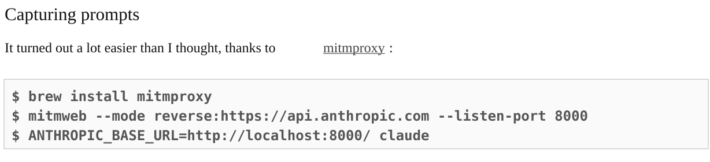

Публичная инструкция
CodeSpeak Workshop: инструкция
За час мы соберем маленькое приложение из спеки, запустим его, изменим поведение через спецификацию и увидим главный цикл: intent -> build -> проверка результата.
План Б: если отстали, переключайтесь на Web-трек.
Установка для macOS / Linux
Откройте терминал и выполните команды по порядку.
curl -LsSf https://astral.sh/uv/install.sh | shНормальный результат выглядит примерно так. Версия и название платформы могут отличаться.
downloading uv 0.11.13 aarch64-apple-darwin
installing to /Users/sbeysenov/.local/bin
uv
uvx
everything's installed!uv --versionuv 0.11.13 (4512a3931 2026-05-10 aarch64-apple-darwin)uv tool install codespeak-cliПосле `uv tool install codespeak-cli` нормальный вывод может быть длинным. Главное, чтобы в конце было примерно так:
Resolved 37 packages in 1.69s
Prepared 1 package in 503ms
Installed 37 packages in 39ms
+ codespeak-cli==0.4.1
+ codespeak-shared==0.4.1
+ textual==8.2.3
Installed 2 executables: codespeak, codespeak-clicodespeak --versionCodeSpeak CLI 0.4.1Если команда не найдена, перезапустите терминал или смотрите раздел «Известные проблемы» ниже.
Установка для Windows
Основной путь для Windows на мастер-классе — через WSL.
- Откройте PowerShell от имени администратора.
- Установите WSL.
wsl --install Ubuntu- Перезагрузите компьютер, если система попросит.
- Откройте Ubuntu.
- Выполните команды как для Linux.
curl -LsSf https://astral.sh/uv/install.sh | shПосле установки `uv` вы можете увидеть примерно такой вывод. Версия, путь и название платформы могут отличаться.
downloading uv 0.11.13 x86_64-unknown-linux-gnu
installing to /home/username/.local/bin
uv
uvx
everything's installed!uv --versionuv 0.11.13 (4512a3931 2026-05-10 x86_64-unknown-linux-gnu)uv tool install codespeak-cliПосле `uv tool install codespeak-cli` нормальный вывод может быть длинным. Главное, чтобы в конце было примерно так:
Resolved 37 packages in 1.69s
Prepared 1 package in 503ms
Installed 37 packages in 39ms
+ codespeak-cli==0.4.1
+ codespeak-shared==0.4.1
+ textual==8.2.3
Installed 2 executables: codespeak, codespeak-clicodespeak --versionCodeSpeak CLI 0.4.1Проверка путей:
which uvwhich codespeakЕсли вы на Windows и WSL не установлен заранее, установка может занять слишком много времени. В этом случае переключайтесь на Web-трек или повторите установку после мастер-класса.
Логин в CodeSpeak
Для конференции используем временный демологин. Он работает только во время мастер-класса.
Если CodeSpeak уже был установлен и вы раньше логинились, сначала удалите старый токен:
rm -f ~/.codespeak/token.jsonЕсли CodeSpeak ставится впервые, этот шаг можно пропустить.
CODESPEAK_DIRECT_LOGIN=workshop_2026_05_21 codespeak loginStarting direct login...
Please enter your email address
Email: mobius@beys.tech
Generating authentication token...
Saving authentication token...
✓ Authentication successful!
Authenticated as: mobius@beys.tech
Token saved to ~/.codespeak/token.json
You can now use CodeSpeak commands that require authentication.Если переменная окружения не подхватывается, добавляйте `CODESPEAK_DIRECT_LOGIN=workshop_2026_05_21` прямо перед каждой командой `codespeak`.
Для самостоятельного прохождения нужен личный API key. Демо-логин конференции работает только во время мастер-класса.
Основной вариант — Anthropic
Создайте ключ в Claude Console и подключите его в текущем терминале:
export ANTHROPIC_API_KEY="sk-ant-..."test -n "$ANTHROPIC_API_KEY" && echo "ANTHROPIC_API_KEY is set"codespeak loginНе добавляйте API key в репозиторий, .spec.md, AGENTS.md, README или скриншоты. Не выводите сам ключ через echo на общем экране.
Альтернативы Anthropic API key
CodeSpeak также поддерживает Anthropic-compatible провайдеров в экспериментальном режиме. В этом случае в ANTHROPIC_API_KEY указывается ключ выбранного провайдера, а в ANTHROPIC_BASE_URL — его endpoint.
| Провайдер | ANTHROPIC_BASE_URL |
|---|---|
| Z.ai | https://api.z.ai/api/anthropic |
| Moonshot AI | https://api.moonshot.ai/anthropic |
| MiniMax | https://api.minimax.io/anthropic |
| DeepSeek | https://api.deepseek.com/anthropic |
| Alibaba Cloud / DashScope | https://dashscope-intl.aliyuncs.com/apps/anthropic |
| OpenRouter | https://openrouter.ai/api |
Пример для OpenRouter:
export ANTHROPIC_BASE_URL="https://openrouter.ai/api"export ANTHROPIC_API_KEY="your-openrouter-api-key"codespeak loginЕсли используете обычный Anthropic API key, ANTHROPIC_BASE_URL не нужен. Задавайте его только для альтернативного провайдера или прокси.
Подробности: CodeSpeak Model selection.
Получить стартовые файлы
Вариант А — через git clone
git clone https://github.com/serik-effective/codespeak-workshopВ папку платформы перейдем на следующем шаге.
Вариант Б — скачать отдельные файлы
Если скачиваете руками, сохраните `geese.spec.md` в папку проекта.
Собираем Funny Geese
Если вы клонировали репозиторий, перейдите в папку своей платформы. Если скачали файлы вручную, откройте папку, куда вы их сохранили.
cd codespeak-workshop/workshop/webcodespeak initcodespeak build geese.spec.mdДля Web CodeSpeak должен создать простую HTML/JS-страницу. Откройте сгенерированный HTML-файл напрямую в браузере.
Для Android откройте проект в Android Studio, выберите эмулятор или устройство и нажмите Run. Если CodeSpeak создал README, сверяйтесь с командами из него.
Для Flutter проверьте окружение и запустите приложение на нужном устройстве.
flutter doctorflutter run -d macosДля iOS откройте сгенерированный `.xcodeproj` или `.xcworkspace` в Xcode, выберите симулятор или устройство и нажмите Run.
Добавляем Speed Slider через спеку
Вставьте этот блок в конец вашей платформенной спеки:
## UI
The bottom-right corner has a speed slider:
- in the middle by default
- moving the slider to the left slows the geese down
- moving to the right speeds them upСнова запускаем build и проверяем приложение:
codespeak build geese.spec.mdВажно заметить: мы добавили фичу через описание поведения, затем запускаем build и проверяем результат.
Takeover готового проекта
Если мы успеваем, ведущий показывает takeover на готовом проекте. Участникам необязательно выполнять этот шаг руками.
- Android: effective-dev-opensource/Effective-Office
- iOS: JohnUfo/SmartSpend
- Flutter: a4studios04/SyncSpend
- CodeSpeak example: codespeak-dev/markitdown
Для Effective Office берем не весь репозиторий. Для демо лучше взять конкретную source-папку планшетной фичи:
codespeak initcodespeak takeover clients/tablet/feature/main/src/commonMain/kotlin -o tablet-main.spec.mdTakeover можно остановить вручную через `Ctrl+C`, если вы уже видите, что нужная спека создана, а дальше начался долгий этап анализа или формирования тестов. Для демо важнее получить intent-спеку, чем ждать весь pipeline.
Для демо takeover можно пропустить тестовую фазу:
codespeak build tablet-main.spec.md --skip-testsЕсли takeover не успеваем, пропускаем этот блок и возвращаемся к Web-треку.
Не пытайтесь героически догонять в терминале
Переключитесь наверху на платформу `Web` и сделайте самую простую Web-версию.
Так вы останетесь в общем сценарии мастер-класса без тяжелой установки Android Studio, Xcode или Flutter SDK.
cd workshop/webcodespeak initcodespeak build geese.spec.mdДля Web после build откройте сгенерированный HTML-файл напрямую в браузере.
Не возвращайтесь к сломанной установке во время мастер-класса. Лучше закончить Web-трек, а мобильное окружение починить после.
Коротко о командах и режимах
- `codespeak init`
- Инициализирует проект для работы с CodeSpeak.
- `codespeak build`
- Берет спеку как описание intent и генерирует или обновляет код.
- `codespeak change`
- Исправляет баг реализации, когда спека написана правильно, но результат работает не так.
- `codespeak takeover`
- Смотрит на уже существующий код и восстанавливает по нему спеки. Полезно для legacy, demo-проектов и vibe-coded проектов.
- Modular takeover
- Takeover не всего репозитория, а конкретной папки, модуля или фичи. Это быстрее и предсказуемее для больших проектов.
- Coverage flow
- Отдельный сценарий, где CodeSpeak помогает добрать тестовое покрытие для уже существующего поведения.
Troubleshooting
`uv: command not found`
Решения: перезапустить терминал или выполнить:
source ~/.zshrcПроверить PATH:
echo $PATHwhich uv`codespeak: command not found`
uv tool listuv tool install codespeak-cliWindows: WSL не установлен
Не тратьте время во время мастер-класса. Переключитесь на Web-трек и поставьте WSL после мастер-класса.
Логин не прошел
codespeak loginили:
CODESPEAK_DIRECT_LOGIN=workshop_2026_05_21 codespeak loginОшибка 400 при вызове `codespeak`
Если команда CodeSpeak завершилась с ошибкой 400, повторите ту же команду еще раз. На мастер-классе это нормальный временный сбой.
`CODESPEAK_DIRECT_LOGIN` не подхватывается
Иногда переменная окружения не сохраняется между командами. В этом случае добавляйте ее прямо перед каждой командой `codespeak`:
CODESPEAK_DIRECT_LOGIN=workshop_2026_05_21 codespeak build <SPEC_FILE>CODESPEAK_DIRECT_LOGIN=workshop_2026_05_21 codespeak changeCODESPEAK_DIRECT_LOGIN=workshop_2026_05_21 codespeak takeover <PATH> -o <SPEC_FILE>`Core Pydantic V1 functionality isn't compatible with Python 3.14 or greater`
Это warning, не всегда ошибка. Если команда продолжила выполняться — ничего не делаем. Если команда упала — переключитесь на Web-трек.
Build идет слишком долго
Если build не завершился за несколько минут, не блокируйте мастер-класс. Переключитесь на Web-трек и продолжайте с простым сценарием.
Спека правильная, но код сгенерировался нерабочим
Не переписывайте спеку, чтобы обойти баг реализации. Если intent описан правильно, создайте code change request:
codespeak change --newВ созданном файле опишите, что именно работает не так: что нажали, что ожидали увидеть, что произошло фактически. Затем примените change request:
codespeak changeКороткий вариант для простого бага:
codespeak change -m "Опишите, что работает не так"Если в проекте несколько спек, укажите нужную спеку первым аргументом:
codespeak change path/to/spec.md -m "Опишите проблему"Полезные официальные инструкции
Если установка не чинится за пару минут, не разбирайте это во время мастер-класса. Откройте ссылки после занятия:
- Code Change Requests guide — что делать, если спека верная, а код содержит баг.
- codespeak change reference — полный синтаксис команды `codespeak change`.
- uv installation guide — установка, обновление и удаление `uv`.
- Microsoft WSL install guide — установка WSL и Ubuntu на Windows.
- Microsoft WSL troubleshooting — типовые ошибки WSL и диагностика.
Capturing prompts

Что попробовать дальше
- Взять маленькую фичу, описать поведение в спеке и запустить `codespeak build`.
- Посмотреть diff, проверить результат и повторить.
- Для бага реализации использовать `codespeak change`.
- Для готового или vibe-coded проекта попробовать `codespeak takeover`.
- Для большого проекта попробовать modular takeover или coverage flow.
Главный следующий шаг: маленький контролируемый эксперимент, а не большой проект целиком.